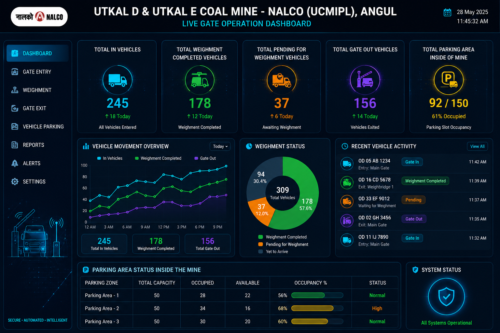
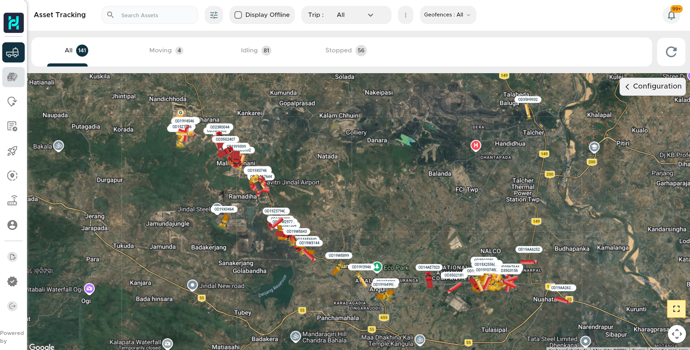
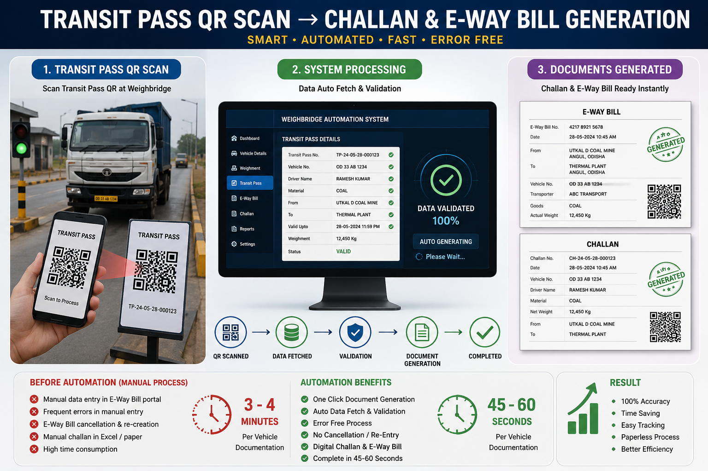

We are transforming our logistics and operational ecosystem into a highly secure, intelligent and fully automated platform to improve operational speed, strengthen validation processes and eliminate manual paperwork across all logistics activities.
The system is designed to provide real-time monitoring, Automated vehicle movement, intelligent validation, automated weighment, digital documentation, live dashboards and secure gate operations with enhanced safety and data security standards.
The automation ecosystem also includes advanced Monitoring System with live vehicle tracking, end-to-end route monitoring, geo-fencing alerts, movement analytics and intelligent route mapping for real-time operational visibility and vehicle security.
The following operational automation modules have already been developed and are currently ready for implementation and live deployment in logistics operations.

Smart vehicle gate entry system with RTO validation, driver verification, live movement tracking and automated secure gate operations dashboard.
Click To View Project →
Advanced based vehicle tracking system with live route monitoring, geo-fencing, trip analytics, route mapping and centralized real-time movement visibility.
Click To View Project →
Automated logistics documentation system with E-Way Bill integration, DL challan validation, auto document generation, digital trip records and intelligent transport compliance monitoring.
Click To View Project →Real-Time Monitoring, Analytics, Visualization & Automation Platforms
Centralized reports analytics dashboard for dispatch quantity monitoring, permit balance tracking, monthly trends and operational summaries.
Intelligent weighbridge operation system with auto documentation, E-Way Bill automation, challan generation and digital transport processing.
Live operational weighment dashboard with real-time vehicle monitoring, TAT analytics, pending status, weighment tracking and smart updates.
Interactive analytics visualization platform with pie charts, trend lines, dispatch comparison, percentage analytics and smart operational insights.
Future Intelligent Logistics & Automation Ecosystem